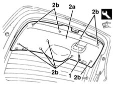

7015A04 tailgate interior panel - r+r
- Path
- Procedures > 70 FITTINGS > 7015 TAILGATE/ > 7015A tailgate assembly > 7015A04 tailgate interior panel - r+r
- Kind
- repair procedure (removal / refitting; the operation number is the code)
- Applies to
- all engines; all production periods
- Interactive page
- https://sloeber94.github.io/elrnDB-lYpsln/en/#/2429529
Applies to: all engines; all production periods
 Removing
Removing
 Refitting
RefittingOpen the tailgate.
1. Undo the bolt.
2. Remove the panel (2a) after having released the inner retainers (2b) using the special tool.
 | Name | Country |
|---|---|---|
1 | Scraper blade | 1.878.077.000 |

Applies to: all engines; all production periods
Refitting
RemovingCheck that the panel is undamaged.
Position the panel attaching the inner retainers.
Tighten the bolt.